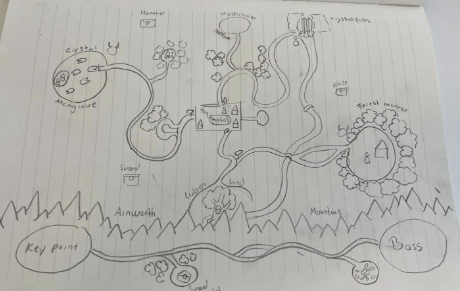
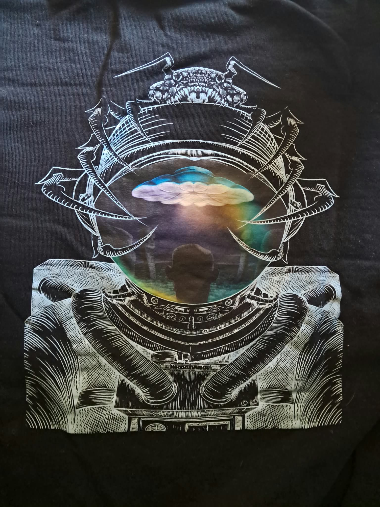
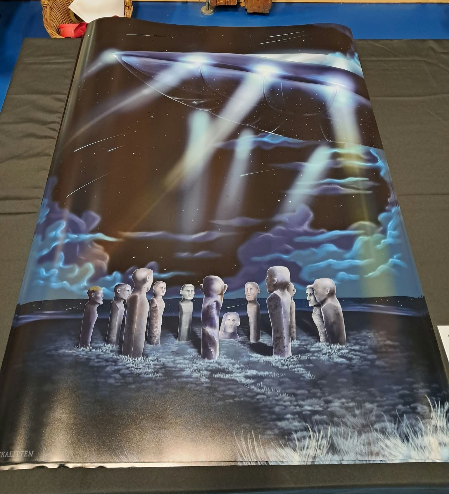

Semester 1.
Adventure game
A game about exploration and puzzels. Made by 3 people for a school project where we learned about worldbuilding, UX, colors and much more.
Try the gameEvery project starts with a question, an idea, or a problem to solve. Here's a look into my process and what I've learned along the way.

A game about exploration and puzzels. Made by 3 people for a school project where we learned about worldbuilding, UX, colors and much more.
Try the gameDnD inspired adventuregame.
The idea originated from the DnD world known as the Feywild. The Feywild is a realm of chaos, mystery, and the unnatural. The game's narrative is inspired by this world and challenged me to work with pixel art and sprite animations. The concept behind the game is that the player takes on the role of a character trapped in the Feywild, who must find their way home by solving clues and engaging in combat.
During the development of the boss, I created concept art to illustrate its intended appearance. This allowed the other group members to review and validate the design, ensuring that everyone agreed on the overall concept. The creation of the backgrounds for the Mushroom Forest, the waterfall, and the tree involved a process of trial and error.


A visual novel horror game, about public transportation. We learnd about coding in HTML, CSS and sound/music
Try the gameEveryday life and the feelings behind it.
Drawing inspiration from Danish public transportation and the fear and anxiety associated with using it, two other team members and I developed a horror visual novel. The aim was to capture and explore many of the familiar situations and experiences that can occur when travelling on public transport.
My main responsibilities in this project were programming, narrative design, and storytelling. From the beginning, I focused on creating an immersive universe that played on the player's emotions. To achieve this, I gathered insights by asking people around me about their personal experiences and encounters on public transport. I used these experiences as inspiration and incorporated them into the game's narrative. We had previously been provided with a game template, which I used as a starting point to incorporate audio and visual elements. I developed the individual scenes using HTML and styled them with CSS. As part of the narrative, I created several different endings based on the player's levels of stress and anxiety. Every decision made throughout the game influences the player's experience and ultimately determines which ending they receive.


I made a Landingpage, with a visual novel like game, which explains world building through world building.
Visit the page and try the gameExploring the connection between creativity and code.
For our exam project, we had to create something that could explain our chosen theme with minimal text, demonstrating what the theme is and how it is or could be applied in multimedia design. The project was aimed at introducing the theme to new students.
My chosen topic was worldbuilding. My initial idea was to create a world through which I could demonstrate what worldbuilding is. The player would learn about worldbuilding through the process of worldbuilding itself, experiencing the concept firsthand rather than simply reading about it.
I developed the visual elements, music, and narrative for the game. However, following feedback from my supervisor, I was advised to incorporate more elements that would demonstrate my ability to work with HTML and CSS. I therefore decided to create a landing page for the game. As a result, I did not have enough time to fully complete the game. However, the core concept is established, and one level is fully playable.
My biggest challenges during this process were working with JavaScript, as we had not yet received any formal instruction in it, and developing the concept of illustrating and communicating worldbuilding through worldbuilding itself. The latter was particularly challenging at the beginning of the process, as it required me to think outside the box and approach the concept from a different perspective.

Interactive poster and buisness, made in four weeks. Everything is handmade.
Try the game

Exploring the connection between creativity and code.
For this project, I wanted to experiment with more interactive elements and find ways to make a digital experience feel more personal.
I combined visual experimentation with coding, learning through trial and error. The biggest lesson was that technical challenges can open the door to new creative possibilities.
Exploring the connection between creativity and code.
For this project, I wanted to experiment with more interactive elements and find ways to make a digital experience feel more personal.
I combined visual experimentation with coding, learning through trial and error. The biggest lesson was that technical challenges can open the door to new creative possibilities.



Participation in the UFO-convention in Maribo Denmark
Exploring the connection between identity and visual communication.
In 2025 and 2026, I participated in the UFO Fair, representing Dodekalitten in 2025 and with Thomas Kadziola in 2026. For both events, I worked on graphic design, developing designs for clothing prints and in 2026 print and posters.
I was given the opportunity to explore the creative direction of the designs, with a focus on achieving a simple yet visually engaging result. For the clothing print I chose a black-and-white line drawing as the central element, using color exclusively in the astronaut’s helmet. This created a natural focal point and added contrast to the design while preserving its minimalist aesthetic. It was also important to me to create a design with lasting appeal, rather than an oversized print that might quickly lose its relevance. My aim was to develop a distinctive graphic design that could stand on its own visually while working effectively as a print on clothing.
I applied the same concept to the poster, aiming to create a design that could stand on its own without being overly busy, allowing the stones to remain the main focus. My design approach was heavily inspired by the night and the sense of mystery surrounding Dodekalittens identity as a mysterious and energy-filled work of art.


.png)
Collaboration with the team behind Dodekalitten, for the inauguration in 2026.
Exploring the connection between identity and visual communication.
From the summer of 2025 until the inauguration of Dodekalitten in 2026, I volunteered to promote running events organised in connection with the inauguration. Initially, there were also plans to incorporate role-playing activities into the event, but these plans were later put on hold. Following this decision, I shifted my focus towards raising awareness of the running events and encouraging participation through visual communication and graphic design.
Throughout my work, I placed particular emphasis on developing a visual style that complemented the natural surroundings and artistic universe of Dodekalitten. The aim was to create a visual connection between the promotional materials and the site's distinctive identity.
As part of the project, I was given the opportunity to design a certificate of participation. My design process was inspired by Dodekalittens visual identity, particularly the circle as a central graphic element. Building on this concept, I developed a certificate featuring rounded shapes and images of each individual stone. The stones held particular significance in the design, as the Greenlandic stone had been inaugurated shortly before the official inauguration of Dodekalitten.
This project allowed me to explore how graphic design and visual communication can support a project and establish a cohesive visual identity across promotional materials and event-related design.
A glimpse into my creative universe.
A collection of my favourite creative moments, bringing together visual design, illustration and interactive experiences.
Explore how I combine creativity, storytelling and technology to bring ideas to life.